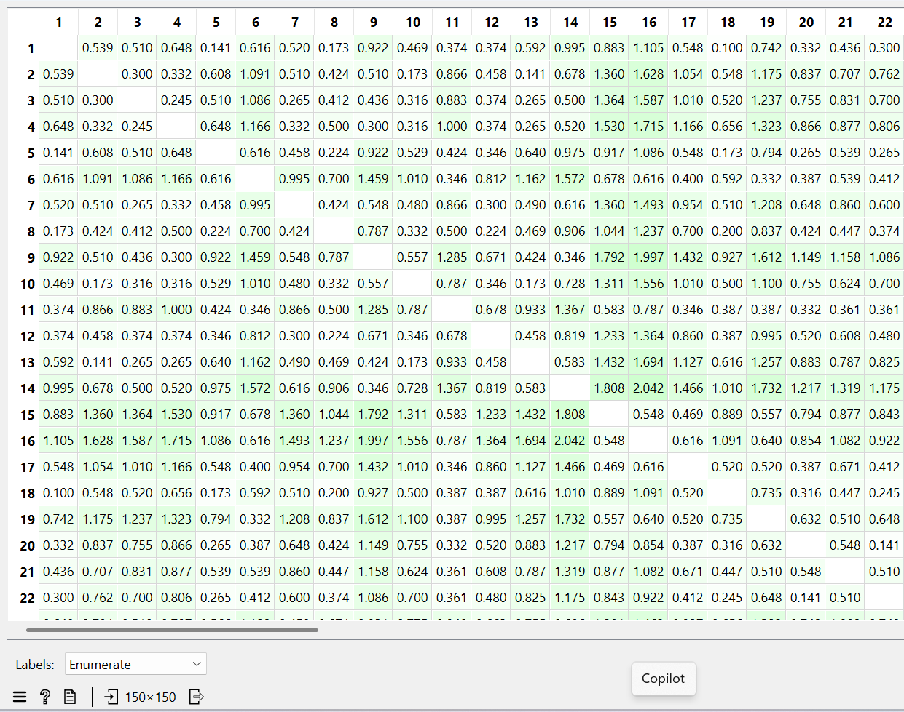
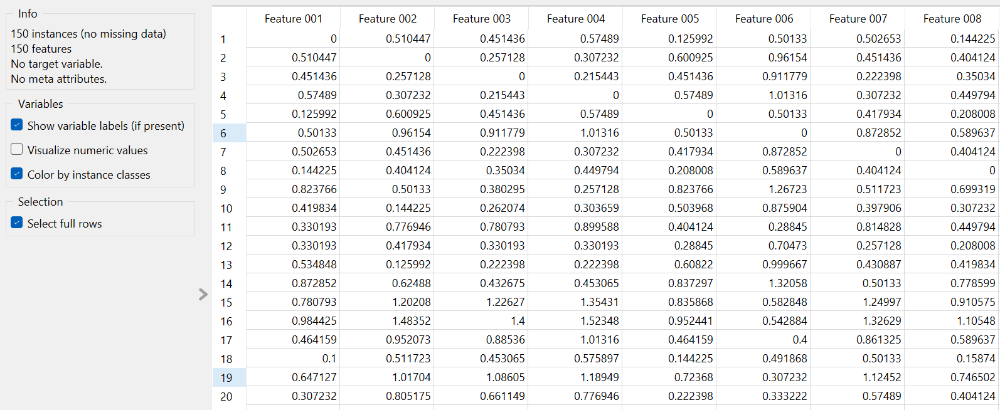

Distance in Iris Data#
Mengukur Jarak Tipe Data Numerik#
Mengukur jarak adalah komponen utama dalam algoritma clustering berbasis jarak. Pada Dataset Iris ini atribut/fitur bertipe data numerik, jadi jarak bisa diukur menggunakan Manhattan Distance, Euclidean Distance, Minkwoski Distance.
Implementasi Menggunakan Euclidean Distance#
Euclidean Distance digunakan untuk mengukur jarak tipe data numerik dan paling umum dipakai. Dataset Iris yang akan diukur menggunakan Euclidean Distance ini terdiri dari 150 data bunga dengan 4 atribut numerik yaitu sepal_length, sepal_width, petal_length, dan petal_width.
Setiap atribut direpresentasikan sebagai vektor berdimensi 4:
Rumus Euclidean Distance yang digunakan adalah:
Sebagai ilustrasi, digunakan dua data pertama pada dataset Iris.
Data ke-1:
Data ke-2:
Langkah perhitungan:
Penjelasan:
Hasil perhitungan menunjukkan bahwa jarak antara data pertama dan data kedua sekitar 0.538. Nilai ini menunjukkan tingkat kemiripan kedua sampel, dimana semakin kecil nilai jarak maka semakin tinggi tingkat kemiripan kedua data tersebut.
Pembentukan Matriks Jarak#
Setelah menghitung jarak antar pasangan data menggunakan Euclidean Distance, langkah berikutnya adalah menyusun nilai-nilai tersebut ke dalam suatu matriks jarak (distance matrix).
Secara umum, jika terdapat \(n\) data, maka matriks jarak yang terbentuk berukuran:
Karena dataset Iris terdiri dari 150 data, maka ukuran matriks jaraknya adalah:
Sebagai ilustrasi, misalkan diambil tiga data pertama dari dataset Iris.
Data ke-1:
Data ke-2:
Data ke-3:
Diasumsikan hasil perhitungan jaraknya menggunakan rumus Euclidean sebelumnya:
Maka matriks jarak yang terbentuk adalah:
Pada matriks jarak terdapat elemen bernilai 0 karena jarak suatu data terhadap dirinya sendiri adalah 0. Matriks ini bersifat simetris, yaitu:
Matriks jarak ini merepresentasikan tingkat kemiripan antar seluruh data. Semakin kecil nilai pada matriks, maka semakin mirip kedua data tersebut.

Implementasi Menggunakan Manhattan Distance#
Manhattan Distance merupakan metode pengukuran jarak yang menghitung jumlah selisih absolut antar atribut pada dua data.
Rumus Manhattan Distance:
Karena dataset Iris memiliki 4 atribut numerik, maka rumusnya menjadi:
Contoh implementasi perhitungan Manhattan Distance menggunakan dua data pertama pada dataset Iris.
Data ke-1:
Data ke-2:
Perhitungan jaraknya:
Hasil perhitungan tersebut menunjukkan bahwa jarak Manhattan antara data pertama dan data kedua adalah 0.7.
Seperti pada Euclidean Distance, nilai Manhattan Distance yang telah dihitung kemudian disusun dalam bentuk matriks jarak. Jika terdapat \(n\) data, maka ukuran matriks jaraknya adalah:
Untuk dataset Iris lengkap:
Sebagai ilustrasi digunakan tiga data pertama.
Diketahui hasil perhitungan:
Pembentukan Matriks Jarak#
Sama dengan Euclidean Distance, elemen diagonal bernilai 0 karena jarak terhadap dirinya sendiri adalah 0.
Manhattan Distance lebih sederhana dibandingkan Euclidean Distance karena tidak menggunakan akar kuadrat. Metode ini sering digunakan pada data berdimensi tinggi atau ketika ingin mengurangi pengaruh nilai ekstrem (outlier).
Dalam implementasi sebenarnya, seluruh pasangan data akan dihitung secara otomatis menggunakan orange, sehingga terbentuk matriks jarak berukuran $\(150 \times 150\)$.

Implementasi Menggunakan Minkowski Distance#
Minkowski Distance merupakan generalisasi dari Euclidean Distance dan Manhattan Distance. Metode ini menggunakan parameter \(p\) untuk menentukan jenis jarak yang dihasilkan.
Rumus Minkowski Distance adalah:
Jika dataset memiliki 4 atribut seperti pada Iris, maka rumusnya menjadi:
Hubungan dengan Metode Lain#
Jika \(p = 1\), maka Minkowski Distance sama dengan Manhattan Distance.
Jika \(p = 2\), maka Minkowski Distance sama dengan Euclidean Distance.
Sebagai ilustrasi digunakan dua data pertama pada dataset Iris.
Data ke-1:
Data ke-2:
Misalkan digunakan parameter:
Maka perhitungannya adalah:
Hasil tersebut menunjukkan bahwa jarak Minkowski dengan \(p=3\) antara dua data tersebut adalah sekitar 0.509.
Pembentukan Matriks Jarak#
Seperti metode sebelumnya, nilai Minkowski Distance disusun dalam bentuk matriks jarak.
Jika terdapat $\(n\)$ data, maka ukuran matriks jaraknya adalah:
Untuk dataset Iris lengkap:
Sebagai ilustrasi untuk tiga data pertama, misalkan diperoleh hasil:
Maka matriks jarak yang terbentuk adalah:
Parameter $\(p\)\( mempengaruhi sensitivitas terhadap perbedaan atribut. Semakin besar nilai \)\(p\)$, maka perbedaan yang besar pada suatu atribut akan memberikan pengaruh yang lebih signifikan terhadap nilai jarak.
Dalam implementasi menggunakan orange, seluruh pasangan data akan dihitung secara otomatis untuk membentuk matriks jarak berukuran $\(150 \times 150\)$.
